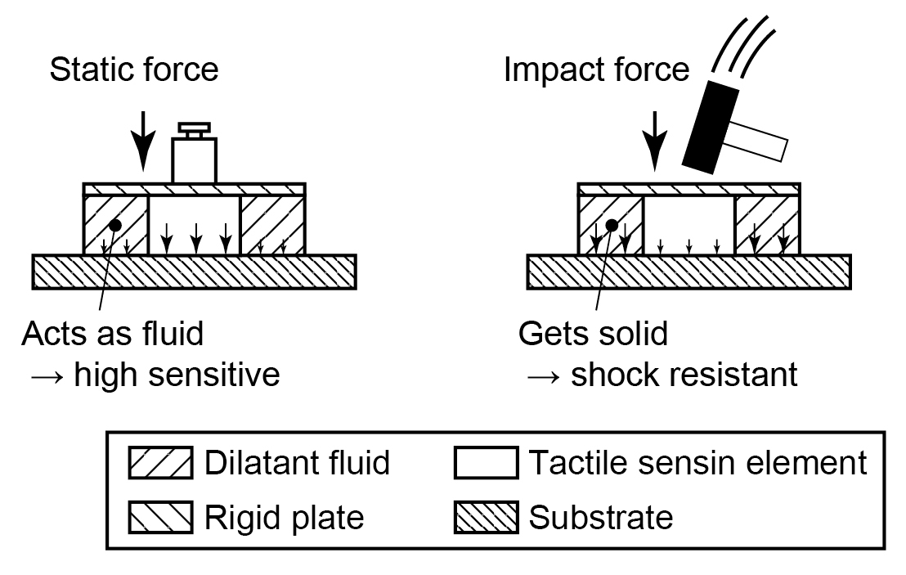

Tactile sensors

To realize high-sensitive and shock-resistant tactile sensor, the sensing element was surrounded by dilatant fluid, which is soft against a static force and hard against an impact force. The applied static force was concentrated to the sensor, whereas the impact force was dispersed to the substrate. We have experimentally shown that the shock-resistant nature of the sensor with dilatant fluid package was 4 to 16 times as large as that of without the fluid.
Publications
- Tomoyuki Takahata, Kiyoshi Matsumoto, and Isao Shimoyama, “Impact-induced hardening package for tactile sensors using dilatant fluid,” The 27th IEEE International Conference on Micro Electro Mechanical Systems (MEMS2015), Estoril, Portugal, 18-22 January, 2015. [Proceedings]